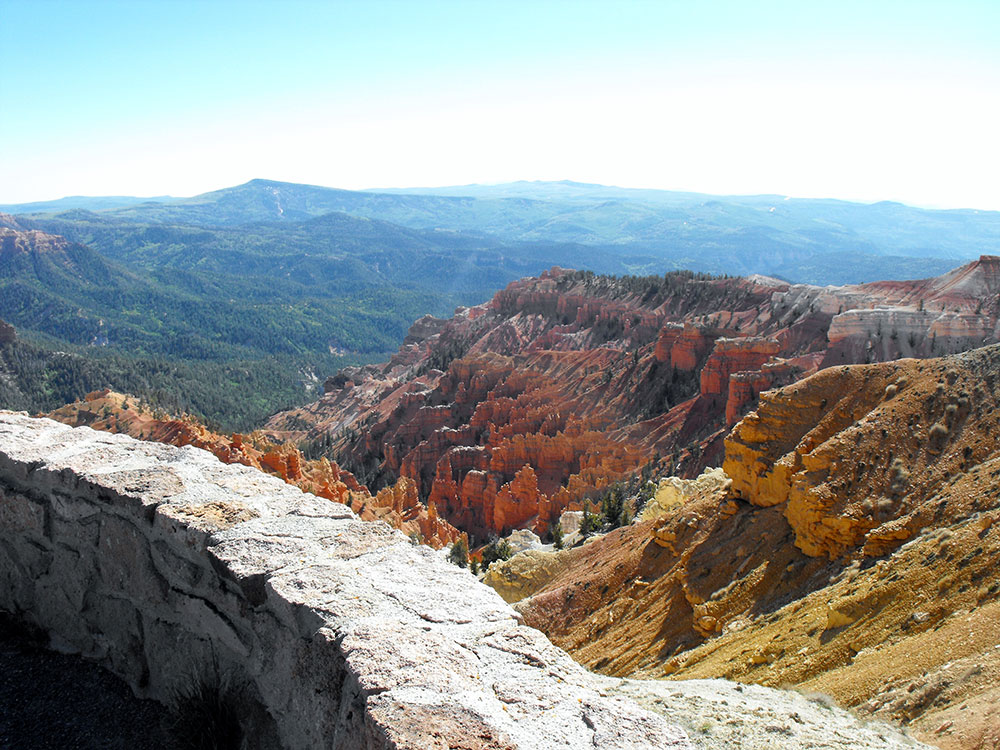
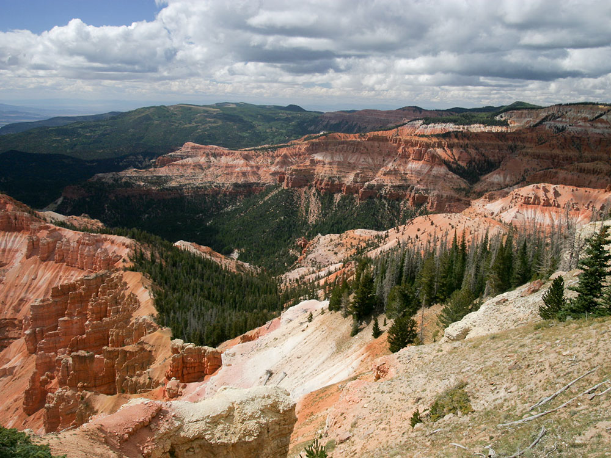
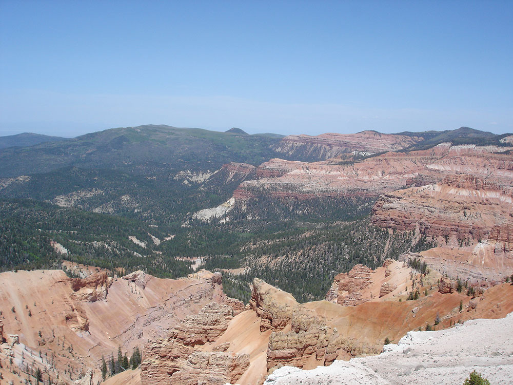
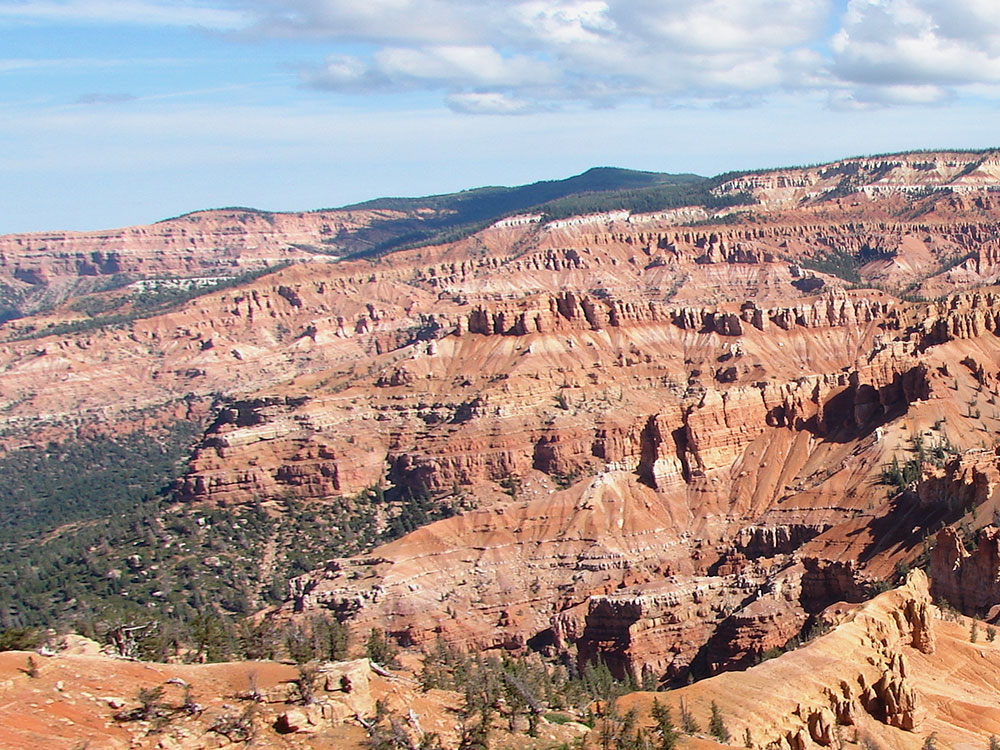

Natural amphitheater, stretching across 3 miles (4.8 km), with a depth of over 2,000 feet (610 m) where the rock is more eroded than, but otherwise similar to, formations at nearby Bryce Canyon National Park
How to Get There
From Zion National Park (60 miles): Head northeast on UT-9 E toward N Fork County Rd. Turn left onto US-89 N/State St. Turn left onto UT-14 W. Turn right onto UT-148 N.
Overview
Cedar Breaks National Monument near Cedar City is a natural amphitheater on the edge of the Markagunt Plateau, about 3 miles across and over 2,000 feet deep, filled with red, orange, and pink hoodoos, spires and canyons. The formations resemble those at Bryce Canyon National Park, but the rim sits above 10,000 feet, so the setting is cooler, higher and far less crowded. The area was proclaimed a national monument in 1933 and is managed by the National Park Service to protect the amphitheater and its high-elevation forests and meadows. Visitors come for the sweeping overlooks, summer wildflower displays, ancient bristlecone pines on the rim, and the dark night skies, and in winter for snowshoeing and cross-country skiing.
Access
The monument is in Iron County in southwestern Utah, about 20 miles east of Cedar City and 4 miles south of Brian Head along Highway 148. Most visitors arrive by car from I-15 by way of Cedar City and Highway 14, or from Parowan on Highway 143, which also connects with Panguitch and Highway 89 to the east. Bryce Canyon National Park is roughly 60 miles away and Zion National Park about 79 miles, so Cedar Breaks fits easily into a southern Utah road trip. There is no public transportation, and the monument has no fuel or food service, so fill up in Cedar City or Brian Head. Highway 148 through the monument is not plowed in winter, so check the park’s current alerts before making the drive.
Seasons
Summer is the main season, when the park road is open, services are running, and the weather is cool compared with the valleys below. Wildflowers peak across the rim from roughly July into August, with some years stretching a little earlier or later depending on snowpack. The highway usually closes after the first heavy snows in late fall and stays closed to cars until late spring, and the visitor center is open only in the warmer months. During the closure, the road becomes a route for snowmobiles, snowshoers and skiers, and the monument offers winter ranger programs. Fall brings golden aspens and quiet overlooks, but early storms can arrive at this elevation, and nights are cold even in July.
Highlights
- Point Supreme, Sunset, Chessmen Ridge, and Alpine Pond: overlooks and short trails on Highway 148
- Rampart Overlook Trail: a 4-mile round trip to a view over the Cedar Valley
- Night sky: an International Dark Sky Park, with ranger astronomy programs
Things to Do
Discover Utah's Natural Amphitheater of Colorful Cliffs
Cedar Breaks National Monument preserves a spectacular natural amphitheater carved into the edge of the Markagunt Plateau in southern Utah. At more than 10,000 feet in elevation, the monument features colorful rock formations, dramatic cliffs, alpine forests, wildflower meadows, and panoramic views that stretch for more than 100 miles on clear days.
Take in the Scenic Overlooks
The monument's breathtaking overlooks provide visitors with incredible views of the vast natural amphitheater. Popular viewpoints such as Point Supreme, Sunset View, and Chessmen Ridge offer stunning perspectives of the colorful spires, hoodoos, and cliffs that make Cedar Breaks one of Utah's most remarkable geological attractions.
Experience Wildflower Season
During the summer months, Cedar Breaks becomes famous for its vibrant wildflower displays. Meadows throughout the monument bloom with colorful flowers, creating one of the most impressive alpine wildflower experiences in the American West.
Explore Alpine Forests and High-Elevation Landscapes
The monument's high elevation supports forests of spruce, fir, and bristlecone pine. Visitors can enjoy cooler temperatures, scenic drives, wildlife viewing, and opportunities to observe some of the oldest living trees in North America.
Combine Your Visit with Southern Utah Adventures
Cedar Breaks is conveniently located near Bryce Canyon National Park, Zion National Park, and Brian Head Resort. Many travelers include the monument as part of a broader southern Utah road trip featuring some of the most iconic landscapes in the Southwest.
Top Trails
Alpine Pond Trail
Length: Approximately 2 miles loop
Elevation Gain: Approximately 200 feet
Difficulty: Easy
One of the monument's most popular hikes, the Alpine Pond Trail travels through forests and wildflower meadows before reaching a peaceful mountain pond. Interpretive signs along the route highlight the area's plants, wildlife, and geology.
Spectra Point and Ramparts Trail
Length: Approximately 4 miles round trip
Elevation Gain: Minimal to Moderate
Difficulty: Easy to Moderate
This scenic trail follows the rim of the amphitheater and provides some of the monument's finest views. Visitors enjoy overlooks of colorful rock formations, steep cliffs, and expansive vistas across southern Utah.
Bristlecone Pine Trail
Length: Approximately 1 mile loop
Elevation Gain: Minimal
Difficulty: Easy
This short interpretive trail introduces visitors to ancient bristlecone pine trees, some of which are more than 1,500 years old. The route offers beautiful forest scenery and educational information about these remarkable trees.
Rattlesnake Creek Trail
Length: Approximately 4 miles round trip
Elevation Gain: Moderate
Difficulty: Moderate
This less-traveled trail ventures through forests and meadows while offering opportunities for wildlife viewing and peaceful exploration away from the monument's busiest viewpoints.
Flora and fauna
Wildlife can often be seen in this high altitude setting. Mule deer and porcupines are common, as are rodents and similar animals such as marmots, golden-mantled ground squirrels, pocket gophers, and chipmunks. Mountain lions and other larger animals live in the area but are seldom seen. Common birds include the Clark's nutcracker, violet-green swallows, and the common raven.
The bristlecone pine, a species of tree that is known as the longest living single organism, can also be found in the high country, with some local specimens known to be more than 1600 years old. Subalpine meadows dot the canyon rim in such areas as Alpine Pond, which is an easy hike from the road along a clear trail. Aspen, Engelmann spruce, subalpine fir trees, and limber pine also grow here.
Spring begins in June at this elevation, when wildflowers cover the canyon rim. Wildflowers bloom all during the short growing season, and visitors can enjoy Colorado columbine, scarlet paintbrush, subalpine larkspur, pretty shooting star, orange sneezeweed, Panguitch buckwheat, prairie smoke, silvery lupin, yellow evening primrose, shrubby cinquefoil, Parry primrose, plantainleaf buttercup, and two species of Penstemon.
History and geology
The amphitheater, located near the west end of the Colorado Plateau, covers the west side of the Markagunt Plateau, the same plateau that forms parts of Zion National Park. Uplift and erosion formed the canyon over millions of years, raising and then wearing away the shale, limestone, and sandstone that were deposited at the bottom of an ancient lake70 by 250 miles (110 km × 400 km), known as Lake Claron, about 60 million years ago. It continues to erode at a pace of about 2 inches (50 mm) every 5 years. Atop the plateau, much of the area is covered by volcanic rock known as rhyolitic tuff, formed during cataclysmic eruptions around 28 million years ago.
The area is a form of badlands—canyons, spires, walls, and cliffs so steep and confusing that the land, while of great aesthetic value, is of little utilitarian worth. Early settlers called them badlands or breaks and created the current name by combining breaks with cedar for the many juniper trees (often incorrectly called cedars) that grow in the area.
Cedar Breaks National Monument was established in 1933. A small lodge designed by Gilbert Stanley Underwood and built and operated by the Utah Parks Company once existed near the south end of the monument, but it was razed in 1972. The Cedar Breaks Lodge was the smallest of the park lodges in the Southwest. It was deemed "uneconomical to operate" by the Park Service, but protests associated with its demolition caused the Park Service to re-examine its policies concerning lodges in other parks, contributing to their preservation.
Attractions
There are two well-advertised hiking trails in the monument, and a campsite near the canyon rim.
Visitor Centers
The monument’s visitor center sits near the rim at about 10,350 feet and is open only in the warmer months, generally from late spring into early fall. It offers exhibits on the geology, wildlife and human history of the amphitheater, and rangers who can suggest trails and explain current road and weather conditions. In summer, evening astronomy programs are held at North View Overlook, and a small contact station there has served visitors during the winter season. The monument’s administrative office is in Cedar City at 2460 West Highway 56 and can be reached at (435) 986-7120.
Camping and Lodging
The monument’s Point Supreme Campground near the rim is open in summer, with a mix of reservable and first-come, first-served sites; check recreation.gov for dates and availability. Additional camping is available in the surrounding Dixie National Forest, and Duck Creek and Navajo Lake have forest campgrounds on the way toward Zion. The closest lodging is in Brian Head, a ski-resort town about 4 miles away with hotels, condos and cabins, and in Parowan. Cedar City, about 30 minutes away, has the widest choice of hotels, motels and restaurants, and Panguitch offers motels on the east side, about an hour from the monument.
This article uses material from the Wikipedia article and official pages for nps.gov, visitutah.com, Cedar Breaks National Monument, released under the Creative Commons Attribution-Share-Alike License 3.0. Additional information from National Park Service.



.jpg){kind=link}


